생산자동화기능사 (2012-07-22 기출문제)
1과목: 기계가공법 및 안전관리(대략구분)
1. 다음 중 기어 세이빙에 대한 설명으로 적합한 것은?
- 절삭된 기어를 열처리하는 것
- 절삭된 기어를 고정밀도로 다듬는 것
- 기어 절삭 공구를 다듬는 것
- 특수 기어를 가공하는 것
(정답률: 83%)

2. 연삭 숫돌에서 무딤(glazing)의 주요 원인이 아닌 것은?
- 연삭 숫돌의 결합도가 필요 이상으로 높다.
- 연삭 숫돌의 원주 속도가 너무 빠르다.
- 연삭 숫돌 재료가 공작물 재료에 부적합하다.
- 연삭 숫돌 입도가 너무 크거나 연삭 깊이가 작다.
(정답률: 59%)
3. 마이크로미터를 사용할 때 주의사항으로 틀린 것은?
- 딤블을 잡고 프레임을 휘둘러 돌리지 않는다.
- 래치 스톱을 사용하여 측정압을 일정하게 한다.
- 클램프로 스핀들을 고정하고 캘리퍼스 대용으로 사용하지 않는다.
- 사용 후 앤빌과 스핀들을 밀착시켜 둔다.
(정답률: 76%)
4. 드릴작업 시 안전 작업에 대한 설명으로 맞는 것은?
- 드릴에 마모나 균열이 있어도 사용한다.
- 드릴작업 시 작은 공작물은 손으로 잡고 사용한다.
- 구멍 뚫기가 끝날 무렵은 이송을 천천히 한다.
- 드릴을 뽑을 때 해머로 두들겨서 뺀다.
(정답률: 79%)
5. 밀링 작업시 안전에 관한 사항이다. 틀린 것은?
- 회전 중에 브러시로 칩을 제거한다.
- 작업 중에 장갑을 끼지 않는다.
- 커터를 설치할 때에는 반드시 스위치를 내려 정지시켜 놓는다.
- 주축 회전속도를 바꿀 때에는 회전을 정지시킨다.
(정답률: 88%)
6. 수치제어 공작기계의 특징에 대한 설명과 거리가 먼 것은?
- 소품종 대량 생산에 적합하다.
- 가공하려는 부품의 모양이 복잡할수록 그 위력을 발휘한다.
- 범용 공작기계에 비하여 가공시간이 단축된다.
- 균일한 품질의 제품을 얻는다.
(정답률: 59%)
7. 선반가공 시 테이퍼의 양 끝 지름 중 큰 지름을 Ø42mm, 작은 지름을 Ø30mm, 테이퍼 전체의 길이를 65mm라 할 때 심압대 편위량은?
- 4mm
- 5mm
- 6mm
- 7mm
(정답률: 62%)
8. 밀링 머신으로 작업할 수 없는 것은?
- 평면 절삭
- 기어 절삭
- 원통 절삭
- 나선홈 절삭
(정답률: 60%)
9. 윤활제의 목적에 해당되지 않는 것은?
- 윤활작용
- 발열작용
- 밀폐작용
- 청정작용
(정답률: 77%)
10. 드릴로 구멍을 뚫은 다음 더욱 정밀하게 가공하는 데 사용되는 절삭공구는?
- 바이트
- 리머
- 스크라이버
- 호브
(정답률: 74%)
2과목: 기계제도(대략구분)
11. 그림의 표면의 결 도시 기호에서 각 항목이 설명하는 것으로 틀린 것은?
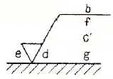
- d : 줄무늬 방향의 기호
- b : 컷 오프 값
- c : 기준길이 ㆍ 평가길이
- g : 표면 파상도
(정답률: 74%)
12. 그림에서 기준 치수 Ø50 기둥의 최대실체치수(MMS)는 얼마인가?
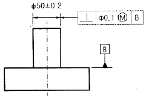
- Ø50.2
- Ø50.3
- Ø49.8
- Ø49.7
(정답률: 66%)
13. 기하 공차의 종류별 표시 기호가 모두 올바르게 표시된 것은?
- 평면도 : ㅡ, 진직도 : ⊥, 동심도 : ◎, 진원도 :

- 평면도 : ㅡ, 진직도 : ∠, 동심도 : ○, 진원도 :
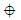
- 평면도 : ▱, 진직도 : ⊥, 동심도 :
 , 진원도 : ○
, 진원도 : ○ - 평면도 : ▱, 진직도 : ㅡ, 동심도 : ◎, 진원도 : ○
(정답률: 77%)
14. KS 기계제도에서의 치수 배치에서 한 개의 연속된 치수선으로 간편하게 표시하는 것으로 치수의 기점의 위치를 기점 기호(○)로 나타내는 치수 기입법은?
- 직렬치수 기입법
- 좌표치수 기입법
- 병렬치수 기입법
- 누진치수 기입법
(정답률: 60%)
15. 도면에서 기술 ㆍ 기호 등을 따로 기입하기 위하여 도형으로부터 끌어내는데 쓰이는 선은?
- 피치선
- 치수선
- 중심선
- 지시선
(정답률: 69%)
16. 그림의 입체도를 제 3각법으로 올바르게 제도한 것은? (단, 화살표 방향을 정면으로 한 투상도임)
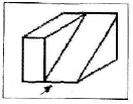
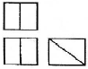
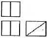
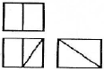
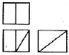
(정답률: 89%)
17. 그림의 조립도에서 부품 ①의 기능 및 조립시와 가공시를 고려할 때, 가장 적합하게 투상된 부품도는?
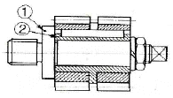
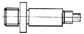
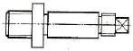
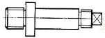
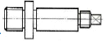
(정답률: 65%)
18. 그림과 같이 대상물의 구멍, 홈 등의 한 곳만의 모양을 도시하는 것으로 충분한 경우 그 필요부분만을 도시하는 투상도는?
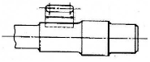
- 한쪽 투상도
- 회전 투상도
- 국부 투상도
- 보조 투상도
(정답률: 71%)
19. “7206 C DB" 베어링의 호칭에서 ”72“의 의미는?
- 베어링 계열 기호
- 궤도륜 모양 기호
- 접촉각 기호
- 안지름 번호
(정답률: 78%)
20. KS 나사제도에서 관용 평행 나사를 나타내는 종류 기호는?
- R
- G
- M
- S
(정답률: 64%)
21. 공압 회로에 다수의 에어 실린더나 액추에이터를 사용할 떄 각 작동순서를 미리 정해두고 순차 제어시키고 싶을 때 사용하는 밸브는?
- 릴리프 밸브
- 시퀀스 밸브
- 감압 밸브
- 유량제어 밸브
(정답률: 90%)
22. 다음 중 유압유의 온도 변화에 대한 점도의 변화를 표시하는 것은?
- 비중
- 체적탄성계수
- 비체적
- 점도지수
(정답률: 88%)
23. 온도가 일정할 때, 초기상태에서 공기의 체적이 10[m3 ], 압력이 5[atm]이었고, 압축 후의 체적이 2[m3 ]이 되었다면, 이 때의 압력은 얼마인가?
- 10[atm]
- 25[atm]
- 50[atm]
- 100[atm]
(정답률: 71%)
24. 교류 솔레노이드와 비교하였을 때 직류 솔레노이드의 특징으로 옳지 않은 것은?
- 간단하며 내구성이 있는 코어가 내장되어 있어 작동 중 발생한 열을 발산해 준다.
- 운전이 정숙하다.
- 부드러운 스위칭 형태, 낮은 유지전력으로 수명이 길다.
- 작동시간이 상대적으로 짧다.
(정답률: 56%)
25. 압축공기를 이용하는 방법 중에서 분출류를 이용하는 것과 거리가 먼 것은?
- 공기 커튼
- 공압 반송
- 공압 베어링
- 버스 출입문 개폐
(정답률: 69%)
26. 유압기기에서 작동유의 기능에 대한 설명으로 틀린 것은?
- 압력 전달 기능
- 윤활 기능
- 방청 기능
- 필터 기능
(정답률: 64%)
27. 공압 조정 유닛 구성 요소로 맞는 것은?
- 필터-압력조절기-윤활기
- 공기건조기-냉각기-윤활기
- 기름 분무 분리기-냉각기-건조기
- 자동배수밸브-압력조절기-공기건조기
(정답률: 71%)
28. 다음 중 공압 조정 유닛의 구성요소에 속하지 않는 것은?
- 필터
- 교축 밸브
- 압력 조절 밸브
- 윤활기
(정답률: 65%)
29. 다음 중 “2압 밸브”를 "AND 밸브“ 라고도 하는 이유를 설명한 것으로 옳은 것은?
- 공기흐름을 정지 또는 통과시켜 주므로
- 압축공기가 2개의 입구에 모두 작용할 때만 출구에 압축공기가 흐르게 되므로
- 2단계의 압력제어가 가능하므로
- 역류를 방지하기 때문에
(정답률: 88%)
30. 다음 공압실린더의 지지 형식에 따른 분류 중 클레비스형의 기호는?
- FA
- CA
- FB
- TC
(정답률: 72%)
3과목: 메카트로닉스 일반(대략구분)
31. 제어회로의 각 부분과 사용되는 소자의 연결이 올바르지 않은 것은?
- 입력 부분 - 리밋 스위치
- 입력 부분 - 푸시버튼 스위치
- 논리 부분 - 압력 스위치
- 출력 부분 - 램프
(정답률: 76%)
32. PLC 프로그램 작성시 시퀀스 논리표현 방법으로 틀린 것은?
- 서식은 통상 가로 쓰기이다.
- 출력 코일은 좌측에 배치한다.
- 연속이 안 되는 선의 교차는 허용되지 않는다.
- 전류는 좌우 방향에 대해서 좌에서 우로 한 방향으로 흐르고, 상하 쪽에서는 양 방향으로 흐른다.
(정답률: 66%)
33. 제어 시스템의 분류 방법 중 제어정보 표시 형태에 의한 분류 방법으로 짝지어진 것은?
- 아날로그 제어, 2진 제어
- 아날로그 제어, 논리 제어
- 논리 제어, 파일럿 제어
- 파일럿 제어, 메모리 제어
(정답률: 66%)
34. 다음 회로도는 자기유지(메모리블록) 회로도를 IEC 심벌기호로 표시한 것이다. 다음 중에서 회로도의 입력 신호와 출력신호 관계를 틀리게 설명한 것은?
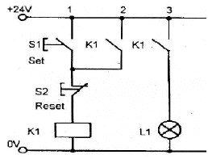
- 푸시버튼 스위치 S1을 누르면 K1 릴레이 내부의 코일이 여자되어 전자석이 된다.
- K1 릴레이가 여자되면 정상상태 열린 접점인 K1 접점이 닫혀 L1 램프가 점등된다.
- K1 릴레이가 여자되면 정상상태 열린 접점인 K1 접점이 닫혀 K1 릴레이가 자기유지 된다.
- K1 릴레이를 소자시켜 L1 램프를 소등시키려면 S1 스위치를 한번 더 누르면 된다.
(정답률: 68%)
35. 로봇 매니퓰레이터(manipulator)에 해당하는 것은?
- 로봇의 손, 손목, 팔
- 로봇 컨트롤러
- 로봇의 눈
- 로봇의 전원장치
(정답률: 81%)
36. PLC에서 CPU부의 내부 구성과 관계가 가장 적은 것은?
- 내부 릴레이
- 타이머
- 카운터
- 리밋 스위치
(정답률: 72%)
37. 자동제어 종류 중 신호특성에 따라 분류할 때 이에 속하는 것은?
- 비율제어
- 서보기구
- 타력제어
- 디지털제어
(정답률: 59%)
38. 프로세스 제어와 관계가 가장 적은 것은?
- 온도 제어
- 유량 제어
- 기계적 변위 제어
- 압력 제어
(정답률: 59%)
39. 개방제어의 블록선도에서 ①과 ②에 들어갈 수 있는 구성요소는?
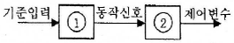
- ①비교부 ②조절부
- ①전원부 ②제어부
- ①조절부 ②전원부
- ①제어기 ②제어공정
(정답률: 51%)
40. 다음 중 PLC의 연산처리 기능에 속하지 않는 것은?
- 산술, 논리 연산처리
- 데이터 전송
- 타이머 및 카운터 기능
- 코드변환
(정답률: 45%)
41. 미리 정해놓은 순서 또는 일정한 논리에 의해 정해진 순서에 따라 진행하는 제어는?
- 정치 제어
- 추종 제어
- 시퀀스 제어
- 프로세스 제어
(정답률: 88%)
42. 다음 중 자동화의 단점을 설명한 것으로 틀린 것은?
- 시설투자비, 운영비 등 자동화비용이 많이 필요하다.
- 설계, 설치, 운영 및 보수유지 등에 높은 기술수준을 요구한다.
- 기계가 전문성을 갖게되는 것이므로 생산 탄력성이 결여된다.
- 설비가 범용성을 갖게 되고 생산성이 향상되어 원가가 절감된다.
(정답률: 66%)
43. 사람의 팔과 가장 비슷하게 움직일 수 있는 로봇은?
- 직교 좌표 로봇
- 수평 다관절 로봇
- 수직 다관절 로봇
- PTP 로봇
(정답률: 78%)
44. PLC의 기종을 선택할 때 주의 사항이 아닌 것은?
- 입ㆍ출력 점수의 확인
- PLC기기의 색상
- 프로그램 메모리의 종류와 용량
- 제어기능의 유무
(정답률: 91%)
45. 다음 중 유도형 센서(고주파 발진형 근접 스위치)가 검출할 수 없는 물질은?
- 구리
- 황동
- 철
- 플라스틱
(정답률: 90%)
46. 누름버튼 스위치에서 조작하는 힘이 가해지지 않았을 때 접점이 on 상태인 것은?
- a접점
- b접점
- c접점
- d접점
(정답률: 75%)
47. 시퀀스 제어에 사용되는 검출용 스위치가 아닌 것은?
- 근접 스위치
- 광전 스위치
- 누름버튼 스위치
- 압력 스위치
(정답률: 70%)
48. 다음 회로와 같은 논리식은?
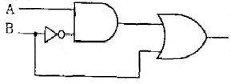
- X = A + B'
- X = A' + B
- X = A + B
- X = A ㆍ B
(정답률: 45%)
49. 다음 중 2개의 입력 A, B가 서로 다른 경우에만 출력이 1이 되고, 2개의 입력이 같은 경우에는 출력이 0으로 되는 회로를 무엇이라 하는가?
- 배타적 OR회로
- 일치회로
- 금지회로
- 다수결회로
(정답률: 85%)
50. 다음 그림은 무슨 회로인가?
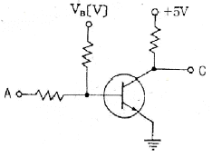
- AND 회로
- OR 회로
- NOT 회로
- NAND 회로
(정답률: 66%)
51. 시퀀스 제어계의 특징으로 거리가 먼 것은?
- 입력에서 출력까지 정해진 순서대로 제어된다.
- 명령에 의한 궤환이 없다.
- 출력이 입력에 영향을 주지 않는다.
- 일반적으로 정량적인 자동제어가 많다.
(정답률: 37%)
52. 다음 표시등 기호와 색상을 연결한 것 중 적합하지 않은 것은?
- WL - 백색 표시등
- RL - 적색 표시등
- GL - 녹색 표시등
- OL - 황색 표시등
(정답률: 85%)
53. P형 반도체와 N형 반도체의 집합으로 구성된 소자로서 한쪽 방향으로만 전류를 잘 통과시키는 정류 작용의 성질을 가진 정류회로에 주로 사용되는 소자는?
- 다이오드
- 트랜지스터
- 릴레이
- 타이머
(정답률: 73%)
54. 전자접촉기(MC), 열동 계전기 등의 고장 시 이들 회로를 점검하기에 가장 적합한 계측기는?
- 멀티테스터
- 오실로스코프
- 신호발진기
- 전위차계
(정답률: 65%)
55. 전동기의 정 ㆍ 역 운전 회로 등에서 다른 계전기의 동시 동작을 금지시키는 회로는?
- 인터록 회로
- 정지 우선 기억 회로
- 기동 우선 기억 회로
- 선입력 우선 회로
(정답률: 81%)
56. 다음 중 검출용 스위치가 아닌 것은?
- 토글 스위치
- 온도 스위치
- 근접 스위치
- 광전 스위치
(정답률: 74%)
57. 전기로 제어계와 같이 온도의 높고 낮음, 즉 크기 및 양에 대하여 제어명령이 내려지는 제어를 무엇이라 하는가?
- 정성적 제어
- 정량적 제어
- 비율 제어
- 추종 제어
(정답률: 61%)
58. 그림은 어떤 회로를 나타낸 것인가?
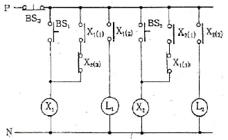
- 표시등 회로
- 제어 회로
- 순차 회로
- 신입신호 우선 회로
(정답률: 59%)
59. 다음 유접점 회로를 PLC를 이용하여 코딩하고자 한다. 빈칸 (a)와 (b)에 해당되는 명령어와 데이터는?
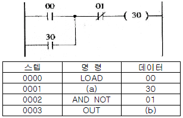
- (a) OR, (b) 30
- (a) OR, (b) 01
- (a) AND, (b) 01
- (a) AND, (b) 30
(정답률: 55%)
60. A + A' 의 출력 값은?
- 1
- 0
- A
- A'
(정답률: 61%)